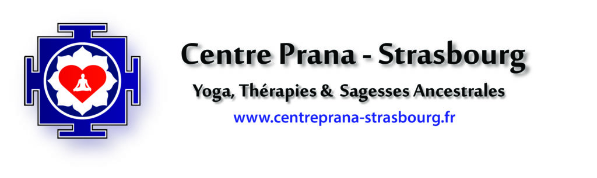
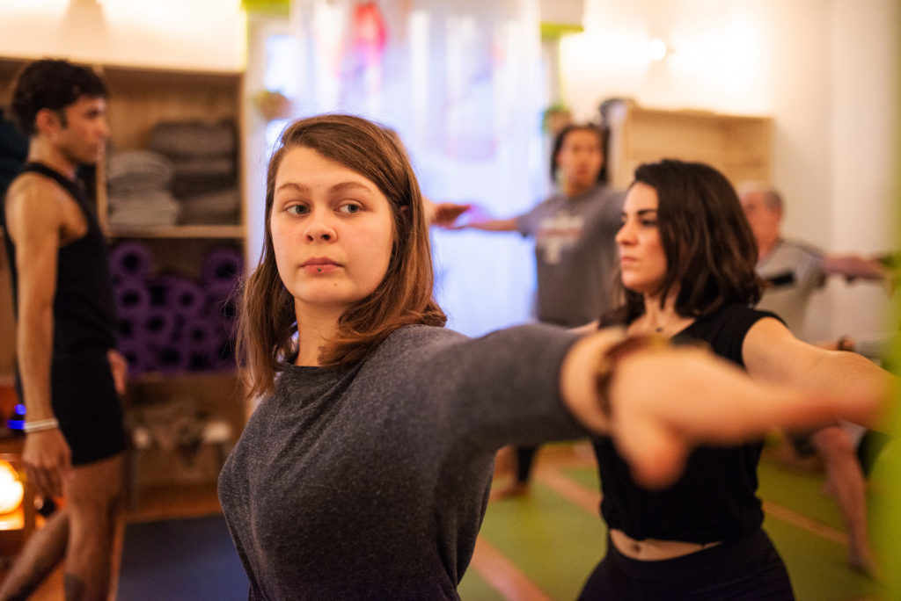
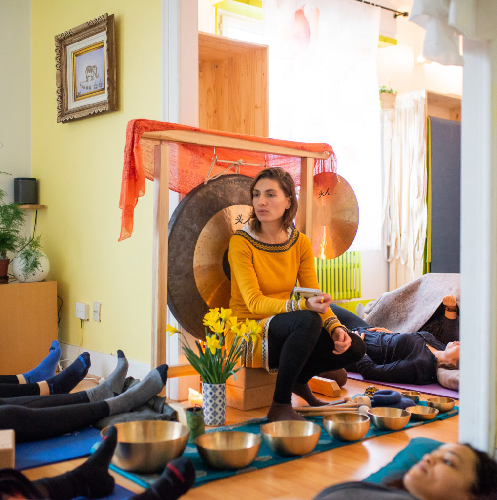

Nos partenariats
Ecoles partenaires
L'association Hoimun Wingtsun devient partenaire de plusieurs écoles en France. Le but commun étant de transmettre un art martial associatif et de qualité. L'idée de ce partenariat est de garder l'esprit ouvert dans notre passion commune, afin de proposer l'essence du Wingtsun : un Kungfu traditionnellement innovant.
Ecoles de partage
L'association Hoimun Wingtsun a pour but de garder l'esprit ouvert. Cette ouverture se concrétise aujourd'hui par le partage de connaissances avec toutes les associations qui le souhaitent, associations de yoga, associations de sports de combat, associations de self defense, écoles d'arts martiaux et bien d'autres. La porte est ouverte.
Notre premier partage se fait avec l'association Centre Prana
Le Centre Prana a été créé en mars 2019 par Mélody et Flavio. Leur mission est de faire émerger chez l’autre ce qu´il a de plus précieux en l’aidant à développer les compétences nécessaires pour qu’elle/il puisse atteindre ses objectifs de vie et trouver sa place en harmonie avec son environnement.
 